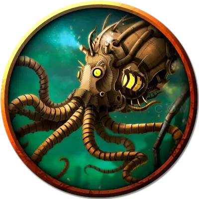

Механический кракен
Clockwork Kraken
Большой Конструкт, без мировоззрения

Класс Доспеха 17 (природный доспех)
Хиты 142 (15к10 + 60)
Скорость 30 футов
| мод | спас | ||
|---|---|---|---|
| СИЛ | 20 | +5 | +5 |
| ЛОВ | 12 | +1 | +1 |
| ТЕЛ | 18 | +4 | +4 |
| мод | спас | ||
|---|---|---|---|
| ИНТ | 3 | −4 | −4 |
| МДР | 11 | +0 | +0 |
| ХАР | 1 | −5 | −5 |
Сопротивление урону огонь; дробящий, колющий, рубящий от немагических атак
Иммунитет к урону психическая энергия, яд
Иммунитет к состояниям испуг, истощение, окаменение, отравление, очарование, паралич
Чувства тёмное зрение 120 футов, пассивное Восприятие 10
Языки понимает языки своего создателя, но не говорит
Опасность 10 (5900 опыта)
Бонус мастерства +4
Особенности
Сопротивление магии. Механический кракен совершает с преимуществом спасброски от заклинаний и прочих магических эффектов.
Независимые щупальца. У механического кракена восемь щупалец, каждое из которых считается существом Среднего размера, передвигается независимо в зависимости от хода создания и имеет скорость полёта в 40 футов. Органы чувств механического кракена работают не только через его основное тело, но и через щупальца. Каждое щупальце может быть атаковано независимо, при этом урон, наносимый щупальцам, переносится на хиты механического кракена. Щупальце уничтожается, если ему наносится более 20 урона.
Уменьшение количества щупалец у кракена до трех или менее соответственно уменьшает количество его атак. Механический кракен может отрастить все уничтоженные щупальца после продолжительного отдыха.
Действия
Мультиатака. Механический кракен совершает четыре Удара щупальцем,
Удар щупальцем. Рукопашная атака оружием: +9 к попаданию, досягаемость 5 футов, одна цель. Попадание: 12 (2к6 + 5) дробящего урона.